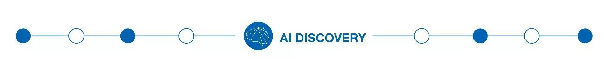

原文连接:https://www.cnblogs.com/java-friend/p/11866376.html
全文共 3241 字，预计学习时长 6 分钟
被问到如何学习编程时，最常听到的问题就是：“有没有什么新项目的好点子？”
一些老套的答案有：“做一个象棋游戏” 或者 “命令行界面”。
这些答案没有错，但这些例子不符合现代编程的需要。现代软件编写需要经常使用软件服务化（SaaS）和网络应用，这意味着程序员需要了解如何在线编程。
用户网站或应用程序的编程需要服务器、身份验证和数据库，这个过程十分复杂。它会迫使你使用高难度的技术互动，而这些互动在开发井字游戏命令行时永远不会用到。
其中一些可以由亚马逊云计算服务或其他大公司常用的第三方来管理。同样，这有助于你接触到行业中有帮助且大量使用的技术。这将成为你简历上更具实践性的一笔，也有助于你学习使用新技术。
小贴士：如果你选择了一个复杂的项目，那么一次专注于构建一个特性。一口气构建一个完整的网站或应用程序是很困难的。首先，创建一个登录界面，或者在用户登录后创建主登录页面。如果试图立刻完成整个项目，那么你很可能会失败。
娱乐向网站
1. 一个无需人工干预就能发布前十名博客的网页抓取器
某些项目推荐帖子存在问题：他们推荐的项目没有激励程序员继续开发。例如，很多人建议建造一个爬虫工具。
一旦你建立了网页爬虫并抓取了数据，你会怎么做？
为什么不利用这些数据建一个网站呢？不一定要很花哨或拥有很多浏览量，这个爬虫可以将数据拉入数据库，然后选择最受欢迎的博客。它可以复制该博客的标题和几个句子，然后创建一个在线分享的帖子。这个项目看似简单，但会令人印象深刻，让你与众不同。
通过这个网站，你已经表明自己可以做的不仅仅是对系统的一小部分进行编码。相反，可以从整个系统的角度思考。你需要考虑如何实现流程自动化、管理数据库、创建网站和选择博客。据此，你还可能拥有一个有形的最终产品。
如果没有有形的最终产品，你可能会变得没有动力，仅仅满足于创建一个爬虫工具。
另外，说不定你的网站会变得很流行！
所需技能：数据库、网页爬虫工具、自动化、网页开发（用于博客）和通用编程。
2. 使用 Meetup 和 Eventbrite APIs 的事件提醒系统
你想去看乐队或喜剧表演，可最终因忘记而错过？也许你所在的地区有一个关于数据科学或大数据的免费会议，但是却因为忘记检查而错过参与。
为什么不使用 Meetup 和 Eventbrite APIs 制作自己的汇集器呢？当关键字出现在事件描述或标题中时，它就会提醒你。现在，假设 Meetup 和 Eventbrite 都有相似的功能，但尝试建立自己的系统总是十分有趣。
你可以定制系统，让它按照你想要的方式工作，甚至可以将它做成一个网站，让其他人也可以收到提醒。通过这个项目，你可以练习使用两种不同的 API，比较和归纳两种 API 中你喜欢或不喜欢的部分。因此，如果负责构建一个应用编程接口，你将更好地了解什么是有效的，什么是无效的。
所需技能：API、数据库、自动化、网络开发和通用编程。
3. 一个 9GAG 的复制网站
当创建自己的项目时，你不需要每次都重造轮子。试着先创造一个可靠的基础网站，允许用户登录、发布照片和动图、滚动订阅等。接下来，可以加入更多有趣的特性，例如关注、点赞和搜索——特别是搜索功能，它能让你深入了解推荐系统和机器学习的工作原理。
试着复制受欢迎的网站总是十分有趣。实际上，这是一种很好的学习方式，因为你必须对每个特性进行逆向工程。逆向工程是一项伟大的技能，因为作为一名软件工程师，你将不断地维护他人代码，你需要用他们的思维方式进行思考。
所需技能：机器学习（推荐系统）、数据库、自动化、网络开发和通用编程。
零售向网站
你是否曾经尝试为朋友挑选合适的礼物？如果你能创建一个网站，预测什么样的礼物适合朋友呢？这个网站可以让目标用户创建一个账户，或是仅是得到一个推荐。
同样，这也为创建需要身份验证、数据库开发等的帐户提供了机会。
该项目的另一个重要部分是你可以使用亚马逊的应用编程接口作为附属链接。你将学习到以下内容：第一，了解如何使用应用编程接口，轻松阅读应用编程接口文档。第二，如果你做得好，就可以通过用户购买的每件产品获得佣金。
通过这个项目，你也可以创建一个基础的机器学习模型。可以创建一个测验，筛选出最好的礼物，然后根据人们点击该礼物的回应率，学习驱动模型。
所需技能：API、数据库、通用编程和应用程序开发。
5. 物物交换和交易网站
考虑创建与 OfferUp 相似的网站。与其花钱，不如创建一个只允许交易的网站。这个概念将迫使你开发一些需要思考的特性。没有计划的话，就不能开展这个项目。
如何发布、在哪里找到最近发布的项目、以及如何搜索——这都是你可以构建的独立功能。此外，你需要考虑用户将如何互动，甚至他们实际上是如何进行交易的。
这个想法在现实生活中不一定有用——但它能提升你作为程序员所掌握的技能。
所需技能：数据库、网络开发、通用编程和应用程序开发（如果你选择制作一个应用程序的话）。

B2B 网站
6. 发票和合同管理系统
合同和发票管理非常复杂。合同中可能有许多难以追踪的细微条款和规定。
因此，即使你将它简化为一些核心组件，这依然一个非常好的项目。将复杂的业务流程转化为软件并不容易。但正因如此，本项目是一个很好的挑战。
再次强调，我们不会把它复杂化。你需要采取一个基本特征，比如输入合同条款，并首先开发这一部分。然后，你可以添加其他功能，如发票跟踪、合同分析和预测。
所需技能：过程管理、数据库、网络开发和通用编程。
7. 任务管理系统
像 KanbanFlow 这样的任务板由几个模块化特性构建而成，因此是一个很好的项目。起始部分会花费你一点工夫，因为需要建立一个耐用的、动态的用户界面。事实上，这个项目可能需要两个人合作：一个人在前端工作，另一个人在后端工作。
不要因此而气馁！这实际上是一个提高沟通和团队合作技能的机会。你们两人需要谈论设计，确保双方都能完全理解，并且知道你们的模块将连接到哪里。
这比看起来更具挑战性。
所需技能：沟通、前端、数据库、网络开发和通用编程。
8. 求职板
任何旨在拥有不同类型用户的项目都需要有趣的设计。如何确保雇主和潜在求职者都能通过体验网站以满足自身需求？和其他大多数项目一样，你不需要同时关注所有项目。首先尝试创建职务公告，然后可以关注求职者及其反应。
所需技能：数据库、网络开发和通用编程。
9. 根据标准化数据集预测利润的网站
大多数公司都拥有许多非常标准化的数据集，包括成本中心的会计数据、账户、行描述，最后则是实际交易成本。
数据集标准化让创建分析变得更容易，这就是它的伟大之处。你可以尝试创建一个标准化的仪表板，帮助公司预测支出，查看每月支出，并尽可能帮助他们改善支出。
对该项目来说，可能要花很多时间学习如何确保数据安全。当然，我们建议在深入研究安全性前，首先尝试构建侧重于获取并显示标准化数据数据的模块。这是一个永远绕不开的难题！
所需技能：预测、业务逻辑、数据库、网络开发和通用编程。

游戏创意
10. 贪吃蛇
如果在本世纪初就用过手机的话，那你可能已经玩过贪吃蛇了。这是一个简单的游戏，但是你可以试着让事情变得更复杂！首先，从尝试开发游戏开始。
你需要弄清楚如何在线开发游戏。Sebastian Opperman 的《霓虹贪吃蛇》是一个很好的开始。之后可以添加一些很酷的新功能，比如特殊物品或者特殊能力。
这是一个玩耍和娱乐的机会。该项目并不是非常技术化，因为不会有很多用户注册并使用该网站。然而，如何保持游戏在线运行是一个很好的挑战。
所需技能：网络开发、通用编程和用户界面。
真心希望这个列表能激励你创建一个超棒的新项目。可以把它添加到你的简历中，并在面试中谈论它。也许你会因此成为一家市值十亿美元的创业公司的下一任 CEO！

“不积跬步，无以至千里”，希望未来的你能：有梦为马 随处可栖！加油，少年！
关注公众号:「Java 知己」，每天更新Java知识哦，期待你的到来！
- 发送「Group」，与 10 万程序员一起进步。
- 发送「面试」，领取BATJ面试资料、面试视频攻略。
- 发送「玩转算法」，领取《玩转算法》系列视频教程。
- 千万不要发送「1024」...